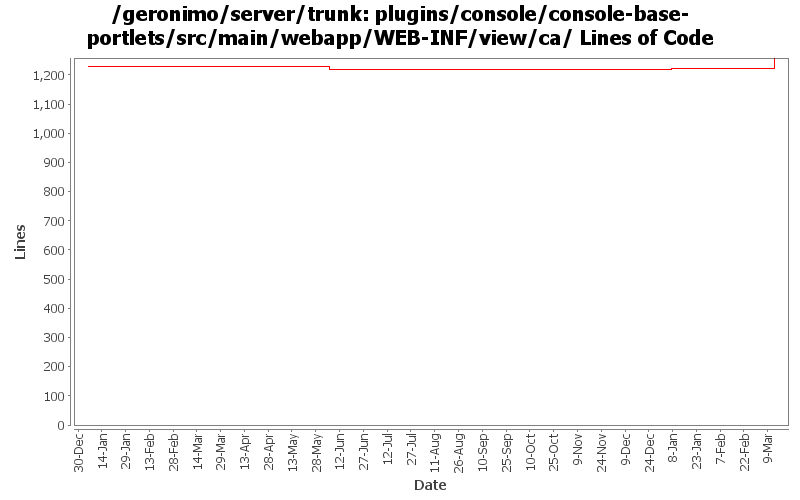

[root]/plugins/console/console-base-portlets/src/main/webapp/WEB-INF/view/ca

| Author | Changes | Lines of Code | Lines per Change |
|---|---|---|---|
| Totals | 65 (100.0%) | 173 (100.0%) | 2.6 |
| dwoods | 51 (78.5%) | 92 (53.2%) | 1.8 |
| xuhaihong | 5 (7.7%) | 61 (35.3%) | 12.2 |
| gawor | 3 (4.6%) | 14 (8.1%) | 4.6 |
| jbohn | 6 (9.2%) | 6 (3.5%) | 1.0 |
GERONIMO-4517 Apply unified message display style(G-4484) to javascript alert messages. Together with the localization of these messages. Thanks for the patch, Gang Yin
61 lines of code changed in 5 files:
part 4 of more cleanup of old forms (see Rev738104 for part 3)
6 lines of code changed in 6 files:
part 3 of more cleanup of old forms (see Rev735728 for part 2)
6 lines of code changed in 3 files:
cleanup old forms that are not using the post method - part 2 (see Rev735155 for part 1)
1 lines of code changed in 1 file:
GERONIMO-4474 Pull out the text in the JSP files to resource bundle files. Applied jsp-localization-fix.patch from Gang Yin.
2 lines of code changed in 2 files:
GERONIMO-4484 Extraction, localization and display of messages generated in portlets. Applied common-message-base.patch and common-message-core.patch from Gang Yin, with some minor updates.
33 lines of code changed in 14 files:
GERONIMO-4474 Pull out the text in the JSP files to resource bundle files. Patches provided by Gang Yin.
2 lines of code changed in 1 file:
GERONIMO-4081 Accessibility issues. Applied GERONIMO-4081-console.patch from Ivan.
48 lines of code changed in 6 files:
CA portlet updates
12 lines of code changed in 2 files:
fix a few resource bundle names/keys in jsps
2 lines of code changed in 1 file:
GERONIMO-1775 Internationalization of the Admin Console. First patch from YunFeng.
0 lines of code changed in 24 files: